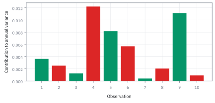
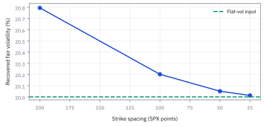
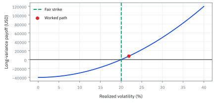

14.8 Variance Swaps and Log-Contract Replication
สร้างราคา variance swap จากสิทธิ์ซื้อขายทั้งแถว
variance swap บน SPX อายุ 30 วัน notional \$1,000,000 ต่อ variance หนึ่งหน่วย option 81 strike ให้ fair strike เท่าไร และถ้าวัด 10 วันได้ผลตอบแทน ±1.2%, −2.2% ฯลฯ ผู้ซื้อได้เท่าไร?
เฉลย: fair strike 0.04020 หรือความผันผวน 20.05% realized variance จาก 10 วันคือ 0.04788 หรือ 21.88% ผู้ซื้อได้ 1,000,000 × 0.00768 = \$7,677.23
Worked Example — โจทย์และสิ่งที่ให้มา
โจทย์ให้อะไรมาบ้าง: ให้ forward ของ SPX ที่ expiry 30 วันเท่ากับ 5,000 จุด อัตราดอกเบี้ยต่อเนื่อง 4% ต่อปี และ option midquotes สังเคราะห์มาจากสูตร 13.2 ด้วยความผันผวนแบน 20% ต่อรากปี ใช้ strike 3,000 ถึง 7,000 ทุก 50 จุด ตัวเลขทั้งหมดเป็นแบบฝึกคำนวณ ไม่ใช่ snapshot ตลาดจริง
สัญญา variance swap สมมติวัด log return ตอนปิด 10 ครั้ง ใช้ $A=252$ observations ต่อปี ไม่หัก sample mean และมี variance notional \$1,000,000 ต่อ annualized variance หนึ่งหน่วย ต้องล็อกสาม convention นี้ก่อนคำนวณ เพราะสัญญาจริงอาจมีวันหยุด ราคา disruption และกติกาปรับข้อมูลต่างกัน
ศัพท์ชุดแรก: สัญญา สิ่งที่มันวัด และหน่วยของเงิน
- variance swap
-
คืออะไร: สัญญาที่จ่ายเงินตามความผันผวนที่เกิดขึ้นจริงตลอดช่วงเวลา เทียบกับระดับที่ตกลงกันไว้ล่วงหน้า
ใช้ทำอะไร: ใช้ซื้อหรือขายความผันผวนตรง ๆ โดยไม่ต้องเดาว่าราคาจะขึ้นหรือลง
ทำไมต้องมีสัญญาแบบนี้: เพราะการเทรดความผันผวนด้วย option ต้องคอยปรับ hedge ทุกวัน และผลที่ได้ปนเปื้อนด้วยว่าราคาบังเอิญไปอยู่ตรงไหน สัญญานี้ตัดความปนเปื้อนนั้นออกทั้งหมด
- fair variance strike
-
คืออะไร: ระดับที่ทำให้สัญญามีมูลค่าเป็นศูนย์ในวันที่เซ็น คือระดับที่ทั้งสองฝ่ายยอมรับได้โดยไม่มีใครต้องจ่ายใคร
ใช้ทำอะไร: เป็นตัวเลขที่ทั้งหัวข้อนี้พยายามคำนวณ
ทำไมถึงหาได้: เพราะมันเท่ากับค่าเฉลี่ยของความผันผวนภายใต้กติกาตั้งราคา และค่านั้นอ่านออกมาจากราคา option บนหน้าจอได้โดยตรง ไม่ต้องพยากรณ์อะไรเลย
- realized variance (RV)
-
คืออะไร: ผลรวมของผลตอบแทนรายวันยกกำลังสอง แล้วปรับให้เป็นหน่วยต่อปี
ใช้ทำอะไร: เป็นตัวเลขที่ใช้ชำระเงินจริงตอนสัญญาจบ
ทำไมต้องยกกำลังสอง: เพราะเราสนใจขนาดของการขยับ ไม่สนใจทิศ การยกกำลังสองลบเครื่องหมายทิ้งโดยไม่ต้องใช้เงื่อนไข และยังทำให้วันที่เหวี่ยงแรง มีน้ำหนักมากกว่าวันเงียบอย่างที่ควรเป็น
- realized volatility
-
คืออะไร: รากที่สองของค่าข้างต้น รายงานเป็นเปอร์เซ็นต์ต่อปี
ใช้ทำอะไร: ใช้พูดคุยกัน เพราะคนอ่านตัวเลขนี้ออกทันที
ทำไมต้องระวัง: เพราะสัญญาจ่ายตามตัวก่อนหน้า ไม่ใช่ตัวนี้ ความสัมพันธ์ระหว่างสองตัวไม่ใช่เส้นตรง เงินที่ได้จริงจึงไม่เป็นสัดส่วนกับตัวเลขที่คุยกัน
- log return
-
คืออะไร: log ของอัตราส่วนราคาสองวันที่ติดกัน
ใช้ทำอะไร: เป็นวัตถุดิบที่เอาไปยกกำลังสองแล้วบวกกัน
ทำไมต้องใช้รูปนี้: เพราะมันบวกกันได้ตามเวลา ผลตอบแทนหลายวันต่อกันคือผลบวกธรรมดา ส่วนผลตอบแทนแบบเปอร์เซ็นต์ต้องคูณกัน ซึ่งใช้กับสูตรในหัวข้อนี้ไม่ได้
- observation schedule
-
คืออะไร: รายการวันและแหล่งราคาที่สัญญาระบุไว้ว่าจะใช้วัด
ใช้ทำอะไร: ใช้ให้ทั้งสองฝ่ายคำนวณเงินชำระได้ตัวเลขเดียวกัน
ทำไมต้องเขียนให้ละเอียด: เพราะ 'ราคาปิด' ของวันเดียวกัน อาจต่างกันได้ถ้าใช้คนละตลาดหรือคนละเวลา และส่วนต่างนั้นกลายเป็นข้อพิพาทเรื่องเงินจริง
- variance notional
-
คืออะไร: จำนวนเงินต่อหนึ่งหน่วยของ variance ต่อปี
ใช้ทำอะไร: ใช้แปลงส่วนต่างที่วัดได้ให้เป็นเงิน
ทำไมคนไม่ค่อยใช้ตัวนี้คุยกัน: เพราะตัวเลขที่ได้ดูไม่คุ้นเลย หนึ่งหน่วยของ variance คือความผันผวน 100% ต่อปี ซึ่งไกลจากของจริงมาก
- vega notional
-
คืออะไร: จำนวนเงินต่อการเปลี่ยนความผันผวน1 จุดเปอร์เซ็นต์ ณ ระดับที่ตกลงไว้
ใช้ทำอะไร: เป็นตัวเลขที่ใช้คุยขนาดสัญญากันจริงในตลาด
ทำไมต้องมีสองตัว: เพราะตัวนี้อ่านง่ายกว่า แต่ใช้ได้เฉพาะรอบ ๆ ระดับที่ตกลง พอความผันผวนจริงห่างจากระดับนั้นมาก เงินที่ได้จะไม่เท่าที่ตัวเลขนี้บอก
- variance point
-
คืออะไร: หน่วยของ variance ที่เท่ากับ $0.01^{2}=0.0001$
ใช้ทำอะไร: ใช้เป็นหน่วยกลางเวลาแปลงระหว่างสองตัวข้างบน
ทำไมต้องระวัง: เพราะการลืมยกกำลังสองตรงนี้ทำให้ตัวคูณผิดไปร้อยเท่า ซึ่งเป็นความผิดพลาดที่พบบ่อยที่สุดในสัญญาประเภทนี้
- forward
-
คืออะไร: ราคาที่ตกลงวันนี้ว่าจะซื้อขายกันในวันหมดอายุ
ใช้ทำอะไร: เป็นจุดแบ่งว่า strike ไหนใช้ put และ strike ไหนใช้ call ในการทำซ้ำ
ทำไมต้องแบ่งตรงนี้: เพราะเราต้องการใช้เฉพาะสัญญาที่ยังไม่มีมูลค่าในตัวเอง ซึ่งเป็นฝั่งที่ตลาดซื้อขายกันคล่องและราคาน่าเชื่อถือกว่า
- discount factor
-
คืออะไร: ตัวคูณที่แปลงเงินวันหมดอายุกลับมาเป็นเงินวันนี้
ใช้ทำอะไร: ใช้ในขั้นที่ 8 ตอนแปลงราคา option เป็นระดับที่ตกลงกัน
ทำไมต้องมี: เพราะราคา option ที่เห็นเป็นเงินวันนี้ ส่วนความผันผวนที่วัดได้เป็นของอนาคต การเชื่อมสองอย่างต้องผ่านตัวคูณนี้เสมอ
- risk-neutral
-
คืออะไร: กติกาถ่วงน้ำหนักโอกาสที่ใช้ตั้งราคา ซึ่งไม่ใช่ความน่าจะเป็นจริงของโลก
ใช้ทำอะไร: เป็นกติกาที่ค่าเฉลี่ยของความผันผวนในหัวข้อนี้คำนวณภายใต้มัน
ทำไมต้องเน้น: เพราะระดับที่คำนวณได้จึงไม่ใช่คำพยากรณ์ว่าความผันผวนจะเป็นเท่าไร มันมักสูงกว่าค่าที่เกิดขึ้นจริงอย่างเป็นระบบ และส่วนต่างนั้นคือค่าประกันที่คนขายเก็บ
- expected value
- expected value คือค่าเฉลี่ยถ่วงด้วยความน่าจะเป็นภายใต้ measure ที่กำหนด ใช้เชื่อมเงินรับอนาคตกับราคาหรือ fair strike วันนี้
- out-of-the-money (OTM) option
-
คืออะไร: สิทธิ์ที่ถ้าหมดอายุวันนี้จะไม่ได้เงินเลย
ใช้ทำอะไร: เป็นสัญญาที่ใช้ทั้งหมดในการทำซ้ำ
ทำไมต้องเลือกเฉพาะฝั่งนี้: เพราะราคาของมันเป็นมูลค่าเวลาล้วน ๆ ไม่มีส่วนที่เป็นมูลค่าในตัวเองมาปน ตัวเลขที่รวมได้จึงสะอาดกว่า
สัญลักษณ์ที่ใช้ในหัวข้อนี้
| สัญลักษณ์ | ความหมาย | หน่วย |
|---|---|---|
| $S_0,S_t,S_T,S_{t_i},r_i=\log(S_{t_i}/S_{t_{i-1}})$ | ราคาปิดตาม observation schedule และ log return ช่วงที่ $i$ หลังปรับ corporate action ตามข้อกำหนดสัญญา | จุด SPX; log return ไม่มีหน่วย |
| $n$ | จำนวนผลตอบแทนที่วัดได้ตลอดอายุสัญญา | ไม่มีหน่วย |
| $A$ | ตัวคูณที่แปลงผลรวมให้เป็นหน่วยต่อปี มักเท่ากับ 252 หารด้วย $n$ | ไม่มีหน่วย |
| $T$ | อายุสัญญาเป็นปี | ปี |
| ${\rm RV}$ | ความผันผวนที่วัดได้จริง ในหน่วยต่อปี เป็นตัวที่ใช้ชำระเงิน | ปี⁻¹ |
| $K_{\rm var},K_{\rm vol}=\sqrt{K_{\rm var}}$ | fair variance strike และรากที่รายงานเป็น volatility | ปี⁻¹; ปี⁻¹ᐟ² |
| $N_v,\Pi_T$ | variance notional และเงินชำระของผู้ซื้อ variance | USD ต่อหนึ่งหน่วยปี⁻¹; USD |
| $F$ | ราคาส่งมอบล่วงหน้า เป็นเส้นแบ่งว่าจะใช้ put หรือ call ในการทำซ้ำ | USD |
| $D=e^{-rT}$ | ตัวคิดลดกลับมาเป็นเงินวันนี้ | ไม่มีหน่วย |
| $r$ | อัตราดอกเบี้ยไร้ความเสี่ยง | ปี⁻¹ |
| $q$ | อัตราเงินปันผลต่อเนื่อง | ปี⁻¹ |
| $\sigma_t$ | ความผันผวน ณ ขณะนั้น ซึ่งเปลี่ยนไปตลอดเส้นทางได้ | ปี⁻¹ᐟ² |
| $W_t$ | แหล่งความสุ่มที่ขับราคา | ปี¹ᐟ² |
| $C(K,T)$ | ราคา call ที่ strike และอายุที่ระบุ | USD |
| $P(K,T)$ | ราคา put ที่ strike และอายุเดียวกัน | USD |
| $Q(K_i)$ | ราคาของใบที่เลือกใช้จริงที่ strike ที่ $i$ คือ put เมื่ออยู่ใต้ forward และ call เมื่ออยู่เหนือ | USD |
| $K_i,K_0,\Delta K_i$ | strike ลำดับที่ $i$ strike แรกที่ไม่เกิน forward และความกว้างกริดรอบ strike | จุดดัชนี |
| $w_T=T K_{\rm var}$ | total variance ของอายุ $T$ คือปริมาณที่สะสมตามเวลาและเชื่อมค่าได้ | ไม่มีหน่วย |
| $T_1$ | อายุของ expiry ที่สั้นกว่าเป้าหมาย | ปี |
| $T_2$ | อายุของ expiry ที่ยาวกว่าเป้าหมาย | ปี |
| $T_{30}$ | อายุเป้าหมายสามสิบวัน ที่ต้องเชื่อมค่าขึ้นมา | ปี |
| $K_1$ | ระดับ variance ที่คำนวณได้จาก expiry สั้น | ปี⁻¹ |
| $K_2$ | ระดับ variance ที่คำนวณได้จาก expiry ยาว | ปี⁻¹ |
| ${\rm VIX}$ | รากของ variance ที่เชื่อมได้ รายงานเป็นเปอร์เซ็นต์ต่อปี | ปี⁻¹ᐟ² |
| $\mathbb Q$ | กติกาถ่วงน้ำหนักที่ใช้ตั้งราคา | ไม่มีหน่วย |
| $\mathbb E^{\mathbb Q}$ | ค่าเฉลี่ยภายใต้กติกานั้น ไม่ใช่คำพยากรณ์ว่าความผันผวนจะเป็นเท่าไร | ไม่มีหน่วย |
| $(x)^+$ | ตัดค่าติดลบทิ้งให้เหลือศูนย์ | ตาม $x$ |
ขั้นที่ 1 — นิยามของเงินที่สัญญาจ่าย ก่อนพูดถึง hedge
สองก้อนนี้เป็น นิยาม ของสัญญา ไม่ใช่ผลที่พิสูจน์ ก่อนจะพูดเรื่อง hedge อะไรทั้งนั้น ต้องรู้ก่อนว่าสัญญานี้จ่ายเงินตามอะไรและจ่ายเมื่อไร ผู้ซื้อได้กำไรเมื่อความผันผวนที่วัดได้จริงสูงกว่าที่ตกลงไว้ และผู้ขายได้เครื่องหมายตรงข้าม ส่วนบรรทัดที่สองเป็นแค่การถอดรากเพื่อรายงานเป็นหน่วยที่คนคุ้นเคย ไม่ใช่สิ่งที่สัญญาจ่าย
$\Pi_T$ คือเงินที่ผู้ซื้อ variance ได้รับ $N_v$ คือ USD ต่อหนึ่งหน่วย annualized variance $\rm RV$ คือค่าที่วัดได้ และ $K_{\rm var}$ คือ strike ที่ตกลง ผู้ขายได้รับเครื่องหมายตรงข้าม; $K_{\rm vol}$ เป็นเพียงรากสำหรับรายงาน
ขั้นที่ 2 — นิยามของสิ่งที่สัญญาวัดจริง: ผลรวมกำลังสองของ log return
สองก้อนนี้เป็น นิยาม ของตัวเลขที่จะเอามาชำระเงิน ซึ่งคู่สัญญาต้องตกลงกันล่วงหน้า ทั้งเรื่องความถี่ในการวัด และตัวคูณที่แปลงเป็นหน่วยต่อปี จุดที่คนสับสนที่สุดคือสัญญานี้วัดกำลังสองของผลตอบแทน ไม่ได้วัดรากของมัน สองอย่างนี้ต่างกันมากในวันที่ราคาเหวี่ยงแรง และหัวข้อ 9.5 อธิบายไว้แล้วว่าทำไม ผลรวมกำลังสองถึงเป็นตัวที่คำนวณได้นิ่งกว่า
$r_i$ คือ log return ของราคาติดกัน $n$ คือจำนวนช่วงและ $A=252$ คือ observations ต่อปี กำลังสองทำให้การขึ้นกับลงขนาดเท่ากันมี contribution เท่ากัน และผลลัพธ์มีหน่วยต่อปี
ขั้นที่ 3 — กาง observation ทั้ง 10 ค่า
ยกกำลังสองทีละวันก่อนแล้วค่อยบวก เพราะเครื่องหมายบวกลบต้องหายไปก่อน ไม่อย่างนั้นวันขึ้นกับวันลงจะหักล้างกันจนเหลือเกือบศูนย์
รายการในวงเล็บคือ log return หน่วย จุด จึงคูณ 0.01 ก่อนยกกำลังสอง ซึ่งเท่ากับคูณ $10^{-4}$ หลังยกกำลังสอง
ผลรวม 0.001900 ไม่มีหน่วย และเก็บขนาดการเคลื่อนไหวไว้ทั้งวันขึ้นและวันลง
ขั้นที่ 4 — annualize โดยไม่สลับราก
แปลงค่าที่วัดรายวันขึ้นเป็นรายปี โดยต้องระวังไม่สลับลำดับระหว่างการยกกำลังสองกับการถอดราก
variance ที่ชำระคือ 0.047880 ต่อปี ส่วน 21.8814% ต่อรากปีเป็นรากที่ใช้สื่อสารเท่านั้น ห้ามนำ 21.8814 ลบกับ strike variance โดยตรง
แล้วเอาไปใช้ทำอะไรได้จริงบ้าง
สัญญาที่จ่ายตามความผันผวนที่เกิดขึ้นจริง ทำให้ซื้อขายความผันผวนได้ตรง ๆ
ใช้เทรดมุมมองเรื่องความผันผวนโดยไม่ต้องปรับสถานะหุ้นตลอดเวลา ซึ่งต่างจากการใช้ option
ใช้ป้องกันความเสี่ยงของพอร์ตที่จะเจ็บเมื่อตลาดเหวี่ยง เพราะสัญญานี้จ่ายพอดีตอนนั้น
ใช้เป็นฐานของดัชนีความผันผวนที่ประกาศทุกวัน ซึ่งคำนวณด้วยวิธีเดียวกับในหัวข้อนี้
ภาพ 14.8a — เครื่องหมายหายไปเมื่อคิด variance

แท่งแสดง contribution $252r_i^2/10$ ของแต่ละ observation สีแยกวันบวกกับวันลบแต่ความสูงขึ้นกับขนาดเท่านั้น วัน −2.2% จึงสร้าง variance มากกว่าวัน +1.2%; variance ไม่สนใจว่าวันนั้นหน้าจอเป็นสีอะไร มันเก็บทั้งคู่เข้าบิล
ศัพท์ชุดที่สอง: การทำซ้ำด้วย option และสิ่งที่ทำให้มันไม่เป๊ะ
- log contract
-
คืออะไร: สัญญาสมมติที่จ่ายเงินเท่ากับลบ log ของราคาปลายทางเทียบกับ forward
ใช้ทำอะไร: เป็นตัวกลางทั้งหมดของหัวข้อนี้ เพราะค่าเฉลี่ยของมันเท่ากับครึ่งหนึ่งของ ความผันผวนที่เราอยากได้พอดี
ทำไมถึงบังเอิญพอดีขนาดนั้น: ไม่ใช่ความบังเอิญ ขั้นที่ 5 แสดงให้เห็นว่า การกระจายของ log ทิ้งพจน์ความโค้งไว้ก้อนหนึ่ง และก้อนนั้นคือความผันผวนพอดี
- static replication
-
คืออะไร: การประกอบพอร์ตครั้งเดียวในวันแรก แล้วถือเฉย ๆ จนจบ
ใช้ทำอะไร: ใช้สร้างสัญญาสมมติข้างบนจาก option ที่ซื้อขายได้จริง
ทำไมถึงมีค่ามาก: เพราะไม่มีต้นทุนการซื้อขายระหว่างทาง และไม่มีความเสี่ยงว่าตลาด จะกระโดดในจังหวะที่เรากำลังปรับพอร์ตอยู่
- dynamic hedge
-
คืออะไร: การถือหุ้นในจำนวนที่ต้องปรับไปเรื่อย ๆ ตามราคาที่เปลี่ยน
ใช้ทำอะไร: ใช้ลบขาเชิงเส้นออก เหลือไว้แต่ความโค้งที่เราต้องการ
ทำไมต้องแยกจากขาบน: เพราะสองขานี้มีความเสี่ยงคนละแบบ ขาที่ถือเฉย ๆ เชื่อถือได้ ส่วนขานี้คือจุดที่ต้นทุนจริงและความผิดพลาดเข้ามา
- option strip
-
คืออะไร: แถวของ option หลาย strike เรียงกันที่วันหมดอายุเดียวกัน
ใช้ทำอะไร: เป็นพอร์ตที่ประกอบขึ้นจริงในขั้นที่ 7
ทำไมต้องใช้หลาย strike: เพราะสัญญาสมมติข้างบนโค้งทุกจุด การเลียนแบบความโค้งที่กระจายทั่วช่วง ต้องใช้สัญญาที่กระจายทั่วช่วงเหมือนกัน
- quadrature
-
คืออะไร: การแทนพื้นที่ใต้เส้นด้วยผลบวกของแท่งบนกริดที่กำหนด
ใช้ทำอะไร: ใช้แปลงสูตรที่เป็นการรวมต่อเนื่อง ให้เป็นผลบวกของ strike ที่มีอยู่จริง
ทำไมต้องระวัง: เพราะกริดที่หยาบเกินไปทำให้ค่าที่ได้ต่ำกว่าความจริง ภาพในหัวข้อนี้แสดงว่าค่าค่อย ๆ เข้าใกล้คำตอบเมื่อกริดถี่ขึ้น
- Cboe Volatility Index (VIX)
-
คืออะไร: ดัชนีที่สรุปความผันผวนคาดหมายราวสามสิบวัน จากราคา option ของดัชนี S&P 500
ใช้ทำอะไร: ใช้เป็นตัวเลขอ้างอิงเดียวที่คนทั้งตลาดดูร่วมกัน
ทำไมถึงเกี่ยวกับหัวข้อนี้: เพราะวิธีคำนวณมันคือผลรวมแบบเดียวกับที่เราทำในขั้นที่ 9 ดัชนีนี้จึงเป็นการทำซ้ำสัญญาสมมติข้างบนที่ใหญ่ที่สุดในโลก
- constant maturity
-
คืออะไร: การรายงานค่าที่อายุคงที่เสมอ โดยเชื่อมจากสองวันหมดอายุที่คร่อมอยู่
ใช้ทำอะไร: ใช้ในขั้นที่ 13 และ 14 เพื่อให้ค่าของวันนี้เทียบกับเมื่อวานได้
ทำไมต้องเชื่อมบน total variance: เพราะเป็นปริมาณที่สะสมตามเวลา การเชื่อมบนความผันผวนตรง ๆ ให้คำตอบที่ผิด แม้จะดูสมเหตุสมผลกว่า
- VIX is not a variance swap
- VIX เป็นค่าดัชนีที่สรุปความผันผวนคาดหมายราว 30 วัน ส่วน variance swap เป็นสัญญาที่มีเงินชำระตาม realized variance จึงใช้ชื่อสองอย่างนี้แทนกันไม่ได้
- bid
-
คืออะไร: ราคาที่มีคนพร้อมรับซื้อ คือราคาที่เราขายได้จริง
ใช้ทำอะไร: ใช้ประเมินว่าการประกอบพอร์ตทำซ้ำมีต้นทุนเท่าไร
ทำไมต้องดู: เพราะพอร์ตทำซ้ำมี option หลายสิบใบ ส่วนต่างที่ใบละนิดเดียว รวมกันแล้วกลายเป็นก้อนที่กินกำไรทั้งหมดได้
- ask
-
คืออะไร: ราคาที่มีคนพร้อมขาย คือราคาที่เราซื้อได้จริง
ใช้ทำอะไร: ใช้คู่กับตัวบนเพื่อวัดต้นทุนสองทาง
ทำไมต้องแยก: เพราะฝั่งที่เราต้องใช้ขึ้นกับว่าเราซื้อหรือขายสัญญาหลัก การใช้ผิดฝั่งทำให้ต้นทุนที่ประเมินไว้ต่ำกว่าความจริงทุกใบ
- midquote
-
คืออะไร: จุดกึ่งกลางระหว่างสองราคาข้างบน
ใช้ทำอะไร: ใช้เป็นค่าประมาณของราคาจริงตอนคำนวณผลรวม
ทำไมถึงไม่ใช่ราคาที่ทำได้: เพราะไม่มีใครซื้อขายที่ราคานี้ ระดับที่คำนวณจากมันจึงเป็นค่าอ้างอิง ไม่ใช่ราคาที่เสนอกันได้จริง
- tail truncation
-
คืออะไร: การตัด strike ปีกไกลออกจากผลรวม เพราะไม่มีราคาที่ใช้ได้
ใช้ทำอะไร: เป็นสิ่งที่ต้องทำจริงเสมอ เพราะตลาดไม่มี strike ไปถึงศูนย์และถึงอนันต์
ทำไมต้องรู้ว่ามันทำให้ค่าต่ำลง: เพราะปีกที่ตัดทิ้งคือส่วนที่รับความเสี่ยงหายนะ ระดับที่คำนวณได้จึงต่ำกว่าความจริงเสมอ และต่ำมากที่สุดในวันที่ตลาดกลัวที่สุด
- jump
-
คืออะไร: การที่ราคาเปลี่ยนข้ามช่วงทันทีโดยไม่ผ่านค่าระหว่างกลาง
ใช้ทำอะไร: เป็นสาเหตุหลักที่สูตรในหัวข้อนี้ไม่แม่นในโลกจริง
ทำไมถึงทำให้พัง: เพราะการพิสูจน์ในขั้นที่ 5 ใช้ข้อสมมติว่าเส้นทางต่อเนื่อง เมื่อราคากระโดด ความสัมพันธ์ระหว่าง log กับความผันผวนที่เราพึ่งไว้ก็ไม่จริงอีกต่อไป
- discrete sampling
-
คืออะไร: การวัดราคาเป็นรายวัน แทนที่จะวัดทุกขณะอย่างที่สูตรสมมติ
ใช้ทำอะไร: เป็นสิ่งที่สัญญาจริงระบุไว้เสมอ
ทำไมถึงสำคัญ: เพราะการวัดถี่กว่าจับความผันผวนได้มากกว่า สัญญาที่วัดรายวันกับที่วัดรายชั่วโมงจึงจ่ายเงินไม่เท่ากันบนเส้นทางเดียวกัน
- replication error
-
คืออะไร: ส่วนต่างระหว่างเงินที่สัญญาจ่ายจริง กับเงินที่พอร์ตทำซ้ำให้
ใช้ทำอะไร: ใช้เป็นตัววัดว่าความเสี่ยงที่เหลืออยู่ใหญ่แค่ไหน
ทำไมต้องยอมรับว่ามีเสมอ: เพราะทั้งสามข้อในกลุ่มนี้เกิดขึ้นจริงทุกครั้ง คนที่บอกว่าสัญญานี้ทำซ้ำได้เป๊ะ กำลังรายงานความเสี่ยงต่ำกว่าที่มีอยู่
จาก path variance ไปหาเงินรับที่ซื้อได้
ตอนนี้ยังไม่มีราคาของ $K_{\rm var}$ เราเริ่มจาก diffusion ที่ราคาเคลื่อนต่อเนื่อง อัตราดอกเบี้ยกับเงินปันผลเป็น deterministic ซื้อขายได้ต่อเนื่อง และมี option ทุก strike จากศูนย์ถึงอนันต์ สมมติฐานแรงเกินตลาดจริงโดยตั้งใจ เพื่อให้เห็นแกนของ replication ก่อนค่อยนับความคลาดเคลื่อน
ขั้นที่ 5 — Itô แยก log return ออกจาก quadratic variation
นี่คือหัวใจของทั้งหัวข้อ ใช้กฎของหัวข้อ 13.2 กับ log ราคา สูตรข้างล่างแสดงว่าสิ่งที่สัญญาจ่ายตาม โผล่ออกมาเองจากการหา derivative ไม่ได้ถูกใส่เข้าไปด้วยมือ และนั่นคือเหตุผลที่สัญญาชนิดนี้ hedge ได้จริง
คราวนี้ยอมให้ความผันผวนเปลี่ยนตามเวลาได้ ต่างจากบทก่อนที่ตรึงไว้เป็นค่าคงที่ คำถามคือ log ของราคาขยับอย่างไร
หา derivative สองชั้นของ log แล้วแทนลงในกฎของหัวข้อ 13.2 พจน์ที่สองติดลบเพราะ derivative ชั้นที่สองของ log ติดลบ ส่วนกำลังสองของการขยับยุบเหลือความผันผวนกำลังสองคูณช่วงเวลา
จุดสำคัญคือพจน์ครึ่งหนึ่งของความผันผวนกำลังสองโผล่มาเอง เราไม่ได้สมมติว่าความผันผวนคงที่เลยสักนิด
และมันโผล่มาคู่กับพจน์แรกที่ hedge ได้ด้วยหุ้นพอดี สองอย่างนี้คือทั้งหมดที่หัวข้อนี้ต้องการ เพราะมันแปลว่าเราซื้อความผันผวนได้ โดยไม่ต้องรู้ล่วงหน้าว่ามันจะเป็นเท่าไร
ขั้นที่ 6 — รวมเวลาแล้วหา expected variance
รวมตลอดอายุสัญญา แล้วหาค่าเฉลี่ย สูตรข้างล่างเปลี่ยนคำถามจาก ความผันผวนในอนาคตจะเป็นเท่าไร ซึ่งตอบไม่ได้ ไปเป็นราคาของสัญญาที่จ่ายตาม log ซึ่งอ่านจากตลาดได้ และนั่นคือทั้งหมดที่ทำให้สัญญานี้ตั้งราคาได้
ย้ายข้างสมการของขั้นที่ 5 เพื่อให้สิ่งที่สัญญาจ่ายตามอยู่ฝั่งเดียว แล้วอินทิเกรตตลอดอายุ ก้อนที่สองยุบเป็นผลต่างของ log ที่ปลายกับที่ต้น ซึ่งเป็นตัวเลขที่อ่านจากตลาดได้
ค่าเฉลี่ยของก้อนแรกเหลือแค่พจน์ที่ไม่สุ่ม เพราะพจน์สุ่มมีค่าเฉลี่ยศูนย์ตามหัวข้อ 13.3 จากนั้นแยก log ออกเป็นส่วนที่เทียบกับราคาส่งมอบล่วงหน้า บวกส่วนที่รู้แน่นอน
แทนกลับแล้วพจน์ที่มี $(r-q)T$ หักกันหมดพอดี เหลือเฉพาะค่าเฉลี่ยของ log ที่วัดจากราคาส่งมอบล่วงหน้า
นั่นคือสะพาน ความผันผวนที่จะเกิดขึ้นในอนาคต ถูกแปลงเป็นราคาของสัญญาชนิดหนึ่ง ซึ่งตลาด option บอกได้
ขั้นที่ 7 — derive เอกลักษณ์การทำซ้ำ payoff ทั่วไปของ Carr–Madan ด้วย integration by parts
ก่อนจะนำสูตรไปใช้กับ log contract ในขั้นถัดไป จุดนี้คือรากฐานทางคณิตศาสตร์ที่สำคัญที่สุดของทฤษฎีการทำซ้ำ: payoff ที่มีส่วนโค้งใด ๆ สามารถแยกเป็นเส้นสัมผัสบวกกับผลรวมถ่วงน้ำหนักของ out-of-the-money option ทุก strike ได้เสมอ ขั้นตอนนี้พิสูจน์ที่มาของอัตลักษณ์ดังกล่าวด้วย integration by parts โดยตรง
เริ่มจากทฤษฎีบทมูลฐานของ calculus สำหรับ function กำไรขาดทุน $g(S)$ ใด ๆ ที่หา derivative ได้สองชั้นรอบจุดอ้างอิง $F$ เมื่อราคาปลายงวด $S_T \ge F$ เราเขียนผลต่างเป็น integral ของ derivative ชั้นแรก แล้วทำ integration by parts โดยเลือกให้ตัวคูณ $v = -(S_T - K)$ ซึ่งเป็นศูนย์ที่ขอบบน
พจน์ขอบเขตคืนเส้นสัมผัส $g'(F)(S_T - F)$ ส่วนพจน์ integral ที่เหลือมี kernel เป็น $(S_T - K)$ ซึ่งตรงกับ payoff ของ call option พอดี ในทำนองเดียวกันเมื่อ $S_T \lt F$ integration by parts จะให้พจน์เส้นสัมผัสเดียวกันบวกกับ integral ที่มี kernel เป็น $(K - S_T)$ ซึ่งคือ payoff ของ put option
เมื่อรวมทั้งสองกรณีเข้าด้วยกัน จะได้อัตลักษณ์ของ Carr–Madan ที่พิสูจน์ว่าสัญญาที่มี payoff โค้งมนใด ๆ สามารถสร้างซ้ำได้เสมอด้วยพอร์ตของ forward contract หนึ่งสัญญา ร่วมกับ call และ put option ทุก strike โดยน้ำหนักของแต่ละ strike คือความโค้ง $g''(K)$ ของ function เป้าหมาย
ขั้นที่ 8 — ทำซ้ำ log contract ด้วยปีก option
log ราคาไม่มีขายในตลาด แต่สร้างขึ้นมาได้จาก option ทั้งแถว สูตรข้างล่างบอกว่าต้องถือแต่ละ strike หนักเท่าไร และที่สำคัญคือมันบอกว่าทำไม คำตอบคือความหนักของแต่ละ strike เท่ากับความโค้งของ function ที่ strike นั้นพอดี
สัญญาที่ขั้นที่ 6 ต้องการไม่มีขายในตลาด แต่สร้างขึ้นจากของที่มีขายได้ หา derivative สองชั้นของ function ที่ต้องสร้าง ชั้นที่สองออกมาเป็นหนึ่งส่วนกำลังสอง ซึ่งจะกลายเป็นน้ำหนักของแต่ละ strike
สูตรที่ใช้เขียน function โค้งใด ๆ เป็นเส้นสัมผัสที่จุดหนึ่ง บวกความโค้งที่แต่ละจุดคูณ payoff ของ option ที่ strike นั้น put ใช้กับฝั่งต่ำกว่าจุดสัมผัส และ call ใช้กับฝั่งสูงกว่า
ที่จุดสัมผัสพอดี log ของหนึ่งเป็นศูนย์ พจน์คงที่จึงหายไป เหลือรูปที่ซื้อได้จริง
อ่านผล ถือ option ทุก strike โดยให้น้ำหนักแปรผกผันกับกำลังสองของ strike แล้วจะได้ payoff ของสิ่งที่ตลาดไม่มีขาย น้ำหนักนั้นจึงไม่ใช่ธรรมเนียม มันคือความโค้งของ log เป๊ะ ๆ
ขั้นที่ 9 — fair strike จากราคา option วันนี้
เมื่อรู้น้ำหนักแล้ว ราคายุติธรรมของสัญญาก็อ่านออกมาจากราคา option ที่ตลาดกำลังเสนอ
$P$ กับ $C$ เป็นราคา option วันนี้จึงคูณ $e^{rT}$ เพื่อย้าย expected payoff ไปเวลา $T$ แล้วปรับด้วยอายุ $T$ ให้เป็นอัตรารายปี สูตรไม่ต้องกำหนด Heston หรือความผันผวนคงที่ แต่ต้องมี continuum ของ strike และเส้นทางต่อเนื่องตามขั้นก่อน
เรียก integral ฝั่ง Put ว่า $I_P$ และฝั่ง Call ว่า $I_C$ ชั่วคราว คำนวณสองส่วนนี้แยกกันแล้วบวก ก่อนคูณด้วยตัวคูณด้านหน้า สูตรจึงยังเป็นสูตรเดิม แต่เห็นส่วนประกอบทีละส่วน
ภาพ 14.8b — เหตุผลของน้ำหนัก $1/K^2$

น้ำหนักความโค้งของ negative log สูงที่ strike ต่ำและลดเร็วเมื่อ strike สูงขึ้น การคูณราคา OTM option ด้วยน้ำหนักนี้ทำให้ put ฝั่งล่างมีบทบาทต่อ fair variance มากกว่าการนับทุก strike เท่ากัน
ขั้นที่ 10 — นิยามของการประมาณบนกริดจริง: แทน integral ด้วยผลรวม
บรรทัดนี้เป็น การประมาณที่เรากำหนดขึ้น ไม่ใช่อัตลักษณ์ที่ตรงเป๊ะ ในโลกจริง strike มีเป็นช่วง ๆ ไม่ต่อเนื่อง จึงต้องแทน integral ของขั้นที่ 8 ด้วยผลรวม โดยความกว้างของแต่ละแท่งคือครึ่งระยะไปยัง strike สองข้าง และน้ำหนักหนึ่งส่วนกำลังสองมาจากความโค้งที่คำนวณไว้แล้ว ไม่ใช่ของใหม่ ส่วนพจน์ท้ายแก้เศษที่เหลือ เมื่อ strike ที่ใกล้ที่สุดไม่ตรงกับราคาส่งมอบล่วงหน้าพอดี
$Q(K_i)$ ใช้ OTM put ใต้ $K_0$ OTM call เหนือ $K_0$ และค่าเฉลี่ยสองฝั่งที่ $K_0$ ส่วน $\Delta K_i$ คือครึ่งระยะถึง strike สองข้าง พจน์ท้ายแก้เมื่อ $K_0$ ไม่ตรง $F$; นี่เป็น quadrature ไม่ใช่อัตลักษณ์ exact
ทำไม $\Delta K_i/K_i^2$: คือ $dK/K^2$ ของ integral ในขั้นก่อน แทนความกว้างจริงของแต่ละแท่ง (50 จุดบนกริดนี้) พจน์ท้ายมาจากการที่ strike แรกใต้ forward ไม่ตรง $F$ พอดี ทำให้ขาเส้นตรงเหลือเศษเล็ก ๆ ที่ต้องหักออก
ตัวอย่างแถวที่ตรวจด้วยมือจากกริด 50 จุด
| $K_i$ (SPX points) | ขาที่ใช้ | $Q(K_i)$ (points) | $10^4\Delta K_iQ/K_i^2$ |
|---|---|---|---|
| 4,000 | put | 0.002934 | 0.000092 |
| 4,500 | put | 3.518020 | 0.086865 |
| 4,800 | put | 39.190377 | 0.850486 |
| 4,900 | put | 69.937135 | 1.456417 |
| 5,000 | เฉลี่ย call กับ put | 113.982179 | 2.279644 |
| 5,100 | call | 72.082248 | 1.385664 |
| 5,200 | call | 42.764619 | 0.790766 |
| 5,500 | call | 6.003740 | 0.099235 |
| 6,000 | call | 0.062475 | 0.000868 |
คอลัมน์สุดท้ายคูณ $10^4$ เพื่อให้อ่านง่ายและยังไม่รวมตัวคูณ annualization ตารางแสดงเพียง 9 แถว แต่ผลรวมต่อไปใช้ครบ 81 strikes ตั้งแต่ 3,000 ถึง 7,000 จุด
ตรวจแถวเดียวด้วยมือ: strike 4,500 ให้ $50\times3.518020/4{,}500^2=175.901/20{,}250{,}000=8.6865\times10^{-6}$ คูณ $10^4$ ได้ 0.086865 ตรงกับตาราง
ขั้นที่ 11 — รวม 81 strikes และตรวจหน่วย
ตัวคูณนี้แปลงผลรวมของราคา option ให้เป็น fair variance โดยมีสองส่วน คือคืนดอกเบี้ยกลับ และหารด้วยอายุสัญญาเพื่อให้เป็นอัตราต่อปี
อายุ 30 วันคิดเป็น $30/365=0.0821918$ ปี การหารด้วยเลขเล็กนี้คือสาเหตุที่ตัวคูณใหญ่ถึง 24 เท่า
หน้านี้ใช้สองตัวหารคนละที่ด้วยเหตุผลคนละอย่าง $A=252$ นับว่าหนึ่งปีวัดราคาปิดได้กี่ครั้ง ซึ่งเกิดเฉพาะวันที่ตลาดเปิด ส่วนอายุสัญญา $T$ นับวันปฏิทิน 365 วัน เพราะสัญญาหมดอายุตามปฏิทินจริง รวมเสาร์อาทิตย์ด้วย แบบเดียวกับหัวข้อ 9.2
เลข 2 มาจากสูตร log-contract ส่วน $e^{rT}$ คืนดอกเบี้ยที่ถูกคิดลดไปแล้วในราคา option
ขั้นที่ 12 — ได้ fair strike ของกริด
คูณผลรวมด้วยตัวแปลงหน่วย แล้วจะได้ราคายุติธรรมที่ใช้เสนอได้จริง
$F=K_0=5{,}000$ ทำให้ correction term เป็นศูนย์ กริดคืน variance 0.04020277 ต่อปีหรือ volatility 20.0506% สูงกว่า input 20% เล็กน้อยเพราะ strike spacing และการตัดปีก
ภาพ 14.8c — strike ใกล้ forward สร้างผลรวมส่วนใหญ่

แท่งคือ contribution ต่อ annualized variance ของแต่ละ strike บนกริด 50 จุด แม้ปีกไกลมีน้ำหนัก $1/K^2$ สูงกว่า แต่ premium เล็กมากจน contribution ลดลง การตัดปีกจึงต้องดูทั้งน้ำหนักและ quote ไม่ใช่ระยะ strike อย่างเดียว
ภาพ 14.8d — quadrature เข้าใกล้ค่า 20% เมื่อกริดถี่ขึ้น

ใช้ปีก 3,000 ถึง 7,000 เท่าเดิม แต่ลด strike spacing จาก 200 เป็น 25 จุด fair volatility ลดจาก 20.7949% เข้าใกล้ 20.0127% เส้นประคือ input 20%; convergence นี้ตรวจเฉพาะ discretization ไม่ได้ลบ bid–ask หรือ tail truncation
ขั้นที่ 13 — ชำระเงินจาก path ที่วัดได้
พอครบอายุ เอาค่าที่วัดได้จริงมาหักกับราคาที่ตกลงกันไว้ นี่คือเงินที่เปลี่ยนมือจริง
ผู้ซื้อ variance ได้เงินเพราะ realized variance 0.047880 สูงกว่า fair strike ของกริด 0.04020277 ผลต่าง 0.00767723 คูณ variance notional ตามหน่วยที่ประกาศ ไม่ใช้ contract multiplier ของ SPX options ซ้ำอีก
ภาพ 14.8e — payoff เป็นเส้นตรงใน variance แต่โค้งใน volatility

แกนนอนแสดง realized volatility แต่สัญญาชำระจากกำลังสอง จึงได้เส้นโค้ง จุดคุ้มทุนคือ 20.0506% และตัวอย่าง 21.8814% จ่าย \$7,677.23 การพูดว่าความผันผวนเพิ่ม 1 จุดแล้วได้เงินคงที่จึงเป็นเพียง linear approximation ใกล้ strike
ขั้นที่ 14 — constant 30 วันต้องเชื่อม total variance
ดัชนีที่อ้างอิงสามสิบวันคงที่ต้องเชื่อมจากสองอายุที่มีจริง สูตรข้างล่างชี้ว่าเชื่อมบนแกนไหนจึงจะถูก และเหตุผลย้อนกลับไปถึงหัวข้อ 9.1 ที่ variance ของช่วงที่ไม่ทับกันบวกกันได้ ส่วนรากของมันบวกไม่ได้
ความผันผวนต่อปีคูณอายุ คือความผันผวนสะสมทั้งช่วง ซึ่งเป็นปริมาณที่บวกกันได้ตามหัวข้อ 9.1 ต่างจากความผันผวนต่อปีที่บวกกันไม่ได้ การเชื่อมจึงต้องทำบนแกนที่บวกกันได้เท่านั้น
เชื่อมเส้นตรงระหว่างสองอายุ โดยถ่วงน้ำหนักตามระยะห่าง อายุที่ใกล้เป้าหมายกว่าได้น้ำหนักมากกว่า แล้วรวมเศษส่วนเข้าด้วยกัน
หารด้วยอายุเป้าหมายเพื่อกลับมาเป็นอัตราต่อปี ถอดรากแล้วคูณร้อยเพื่อรายงานเป็นจุด
จุดที่พลาดกันบ่อยคือเชื่อมบนแกนความผันผวนโดยตรง ซึ่งให้คำตอบผิด เพราะสิ่งที่บวกกันได้คือความผันผวนสะสม ไม่ใช่ความผันผวนต่อปี
ขั้นที่ 15 — ตัวอย่างการเชื่อม 23 วันกับ 37 วัน
อายุ 23 วันกับ 37 วันคร่อม 30 วันที่เราต้องการ ต้องเชื่อมบนแกน total variance ไม่ใช่เชื่อมความผันผวนตรง ๆ
30 วันอยู่กึ่งกลางระหว่าง 23 กับ 37 พอดี ตัวถ่วงจึงเป็น 0.5
ถ้าเชื่อมความผันผวนตรง ๆ จะได้ 20.5% ซึ่งสูงกว่าคำตอบที่ถูกต้อง 20.2027% ความต่างนี้คือเหตุผลที่ต้องเชื่อมบนแกน variance
คำตอบ — fair strike จาก option ทั้งแถว และเงินชำระของ variance swap
คำถาม: forward ของ SPX 5,000 จุด ดอกเบี้ย 4% option อายุ 30 วันที่ strike 3,000 ถึง 7,000 ทุก 50 จุด ความผันผวน 20% fair variance strike เท่าไร และ path 10 วันตัวอย่างจ่ายผู้ซื้อ notional \$1,000,000 เท่าไร?
ของที่มี: ขั้นที่ 2 ถึง 4 และ 10 ถึง 15
1 ผลรวมกำลังสองของ log return 10 วันคือ 0.001900 คูณ 252 ส่วน 10 ได้ realized variance 0.047880 หรือ 21.88%
2 ราคา option ทั้ง 81 strike คูณความกว้าง 50 จุดแล้วหารด้วยกำลังสองของ strike รวมได้ 0.0016467458 คูณตัวแปลงหน่วย 24.4135 ได้ fair strike 0.04020277 หรือ 20.05%
3 เงินชำระ 1,000,000 × (0.047880 − 0.04020277) = \$7,677.23 ผู้ซื้อได้เพราะความผันผวนที่เกิดจริงสูงกว่าที่ตกลงไว้
4 ค่าคงที่ 30 วันจาก 23 วันที่ 22% กับ 37 วันที่ 19% เชื่อมบน total variance ได้ 20.20% ไม่ใช่ 20.5% ที่ได้จากการเฉลี่ยความผันผวนตรง ๆ
ตรวจเองใน 10 วินาที: (0.047880 − 0.040203) × 1,000,000 ≈ \$7,677 และรากของ 0.0402 ใกล้ 0.20 ตรงกับความผันผวนที่ใช้สร้างราคา
แปลว่าอะไร: variance swap ซื้อความผันผวนตรง ๆ โดยไม่ต้อง hedge delta ทุกวัน ราคายุติธรรมอ่านได้จาก option ทั้งแถวที่ถ่วงด้วยหนึ่งส่วน K² ฝั่ง put ต่ำจึงมีน้ำหนักมาก และสัญญาจ่ายเป็นเส้นตรงใน variance ไม่ใช่ในความผันผวน
โค้ดตรวจ realized variance, fair strike 81 strike, เงินชำระ และการเชื่อม 30 วัน
import numpy as np
from scipy.stats import norm
r_obs = 0.01 * np.array([1.2, -1.0, 0.7, -2.2, 1.8, -1.5, 0.4, -0.9, 2.1, -0.6])
assert abs((r_obs**2).sum() - 0.001900) < 1e-12
RV = 252 / 10 * (r_obs**2).sum()
assert abs(RV - 0.047880) < 1e-12 and abs(np.sqrt(RV) - 0.218814) < 1e-6
F, r, T, s = 5000.0, 0.04, 30 / 365, 0.20
D = np.exp(-r * T)
def black(K, kind):
d1 = (np.log(F / K) + s * s / 2 * T) / (s * np.sqrt(T))
d2 = d1 - s * np.sqrt(T)
return D * (F * norm.cdf(d1) - K * norm.cdf(d2)) if kind == "c" else D * (K * norm.cdf(-d2) - F * norm.cdf(-d1))
K = np.arange(3000, 7001, 50.0)
Q = np.where(K < F, black(K, "p"), np.where(K > F, black(K, "c"), (black(K, "c") + black(K, "p")) / 2))
assert len(K) == 81 and abs(Q[K == 4500][0] - 3.518020) < 1e-6
total = (50 * Q / K**2).sum()
factor = 2 * np.exp(r * T) / T
assert abs(total - 0.001646745831) < 1e-12 and abs(factor - 24.41346498) < 1e-8
Kvar = factor * total
assert abs(Kvar - 0.04020277169) < 1e-11 and abs(np.sqrt(Kvar) - 0.20050629) < 1e-8
assert abs(1_000_000 * (RV - Kvar) - 7677.23) < 0.01
w23, w37 = 0.22**2 * 23 / 365, 0.19**2 * 37 / 365
w30 = w23 + (30 - 23) / (37 - 23) * (w37 - w23)
assert abs(w30 - 0.00335466) < 1e-8 and abs(np.sqrt(w30 / (30 / 365)) - 0.202027) < 1e-6
assert abs((0.22 + 0.19) / 2 - 0.205) < 1e-12 # the wrong, linear-in-vol answerโค้ดวัด realized variance จาก 10 ผลตอบแทน สร้างราคา option 81 strike จากความผันผวน 20% หา fair strike 0.04020277 คำนวณเงินชำระ \$7,677.23 และเชื่อม 23 วันกับ 37 วันเป็น 20.20%
กับดัก: สูตร exact เจอตลาดที่มีกริดและ jump
integral replication สมมติว่ามี option ทุก strike แต่หน้าจอจริงมีช่วงจำกัด midquote อาจซื้อขายไม่ได้ และปีกไกลอาจไม่มี bid การเพิ่ม strike ให้ถี่ขึ้นลด discretization error แต่ไม่ได้พิสูจน์ว่าราคาที่เติมในปีกถูก จึงต้องขยับ strike cutoff, bid–ask และ forward แล้วรายงานว่าคำตอบเปลี่ยนเท่าไร
สูตร pathwise สมมติราคาเดินต่อเนื่อง แต่สัญญาจริงวัด log return เป็นช่วงและตลาดกระโดดได้ จึงเหลือ replication error ส่วน corporate action, ตลาดหยุดผิดปกติ และข้อมูลที่หายต้องตัดสินตามเอกสารสัญญา
VIX เป็นดัชนีที่ต่ออายุให้คงที่และมีกฎเลือก option ของตัวเอง ไม่ใช่ variance swap ที่ซื้อเหมือนหุ้น ชุด option ที่มีปีกกว้างก็ไม่ได้ลบ tail risk มันแค่ส่งใบแจ้งหนี้ช้าลง
ที่มาที่ไป: สัญญาที่จ่ายตามความผันผวนตรง ๆ
การเทรดความผันผวนด้วย option มีปัญหาที่น่ารำคาญ คือ option ยังไวต่อทิศทางราคาอยู่ ต้องคอยปรับสถานะหุ้นตลอดเวลาเพื่อตัดส่วนนั้นออก ซึ่งมีต้นทุนและไม่เคยตัดได้หมด
คำถามที่ตามมาคือ ทำไมไม่ทำสัญญาที่จ่ายตามความผันผวนตรง ๆ ไปเลย
คำตอบที่พบคือทำได้ และที่น่าทึ่งกว่านั้นคือสัญญาแบบนั้นสร้างซ้ำได้ด้วย option ทั้งแถว ในสัดส่วนที่คำนวณได้ล่วงหน้า และไม่ขึ้นกับแบบจำลองใด ๆ เลย
ผลข้อนี้เป็นฐานของดัชนีความผันผวนที่ประกาศทุกวัน ซึ่งเปลี่ยนมาใช้วิธีนี้ในปี 2003 แทนวิธีเดิมที่ต้องพึ่งสูตรตั้งราคา
ที่มาและพัฒนาการ: จากความยุ่งยากของ Delta-Hedging สู่การทำซ้ำแบบจำลองอิสระ (1994–1999)
ในทศวรรษ 1990 หลังวิกฤต Black Monday ผู้จัดการกองทุนและ trading desk ด้าน derivative ต้องการเครื่องมือสำหรับซื้อขายความผันผวนโดยตรง แต่การใช้ option ธรรมดาเช่น straddle มีปัญหาใหญ่คือ vega และ gamma เปลี่ยนแปลงตลอดเวลาตามการเคลื่อนที่ของราคาหุ้น ทำให้ผู้ค้าต้องทำ dynamic delta-hedging ทุกวัน ซึ่งสร้างต้นทุนธุรกรรมมหาศาลและมีความเสี่ยงจากแบบจำลองว่าความผันผวนที่ใช้ hedge จะตรงกับความเป็นจริงหรือไม่
ในปี 1994 Anthony Neuberger ได้เสนอสัญญา log contract และแสดงให้เห็นว่า dollar gamma ของสัญญาดังกล่าวมีค่าคงที่ ซึ่งไปหักล้างกับความผันผวนของราคาสินทรัพย์ได้อย่างสมบูรณ์ ส่งผลให้การถือสัญญา log contract ควบคู่กับการทำ dynamic trading ในหุ้น สามารถสังเคราะห์ realized variance สะสมได้จริงโดยไม่ต้องพึ่งพาแบบจำลองความผันผวนใด ๆ
ต่อมาราว ๆ ปี 1998 ถึง 1999 Peter Carr และ Dilip Madan ร่วมกับทีมวิจัยของ Goldman Sachs (Demeterfi, Derman, Kamal และ Zou) ได้ค้นพบวิธีทำซ้ำสัญญา log contract แบบคงที่ (static replication) โดยถือพอร์ตของ European call และ put option ทุก strike ถ่วงน้ำหนักแปรผกผันกับกำลังสองของ strike ($1/K^2$)
ผลงานนี้ปฏิวัติการเทรด variance swap ใน Wall Street เพราะวาณิชธนกิจสามารถรับซื้อหรือขาย variance swap แล้ว hedge ความเสี่ยงแทบทั้งหมดด้วย option ในตลาดได้อย่างเป็นรูปธรรม และในปี 2003 Cboe ก็ได้นำสูตรนี้ไปใช้คำนวณดัชนี VIX ยุคใหม่จนถึงปัจจุบัน
ข้อจำกัด: วิธีนี้สมมติอะไร และของจริงเป็นอย่างไร
| เรื่อง | วิธีนี้สมมติว่า | ของจริงเป็นอย่างไร | ผลที่ตามมาเวลาใช้งาน |
|---|---|---|---|
| ช่วงของ strike | มี option ครบทุก strike | มีเป็นช่วง ๆ และปลายทั้งสองข้างขาด | ราคาที่คำนวณได้ต่ำกว่าความจริง เพราะส่วนหางที่ขาดไปมีค่า |
| ความต่อเนื่อง | ราคาไม่กระโดด | กระโดด | การสร้างซ้ำด้วย option ไม่สมบูรณ์ และส่วนที่ขาดคือส่วนที่สำคัญที่สุด |
| การวัด | วัดความผันผวนจากราคาปิดรายวัน | ความผันผวนระหว่างวันไม่ถูกนับ | สัญญาจ่ายตามนิยามในเอกสาร ซึ่งอาจต่ำกว่าความผันผวนที่รู้สึกจริง |
แถวแรกเป็นเหตุผลที่ดัชนีความผันผวนมีสูตรคำนวณที่ระบุ strike ที่ใช้อย่างละเอียด
สรุปที่ใช้ได้จริง
- คำนวณ realized variance ตาม observation schedule และ annualization ที่สัญญาระบุก่อนแปลงเป็น USD
- fair variance strike มาจาก OTM put ใต้ forward และ OTM call เหนือ forward ที่ถ่วงด้วย $1/K^2$
- ผลรวมแบบ VIX-style มี discretization, tail truncation และ quote conventions; constant 30 วันเชื่อม total variance
- variance swap เป็นเส้นตรงใน variance ไม่ใช่ในความผันผวนและ jump ทำให้ static replication เหลือ basis risk